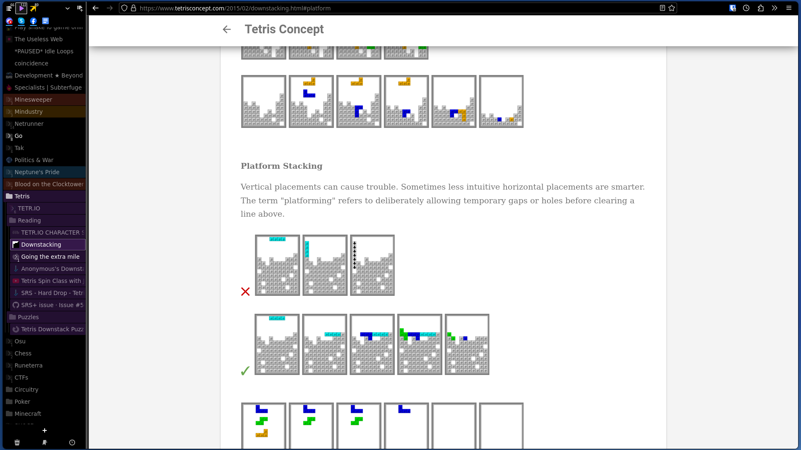
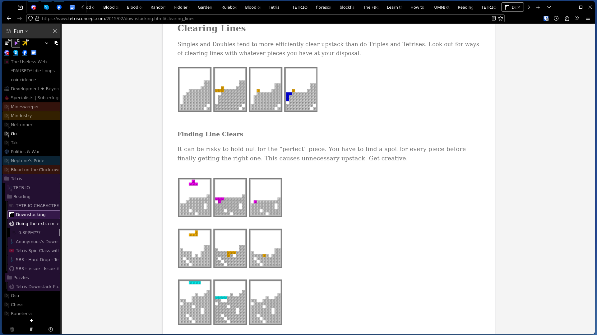
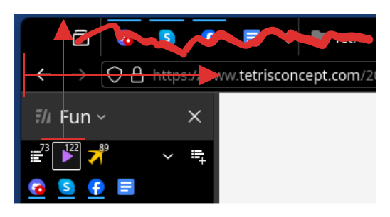

Overview
I have been using this cool new fork of Firefox for the last 6 months called “Sidebery”. It looks a bit like this

It has all the usual features of Firefox, plus a few more:
- All of the browser tabs are on the side, can be organized hierarchically, and can even be colored.
- There’s multiple panels of tabs for different purposes, keeping you focused on what you need to do.
- You can have (literally) thousands of tabs open without requiring more than a few gigs of ram.
- That is because it smartly keeps all of those tabs unloaded until you click on one, and then loads the tab you clicked on. All of the greyed out tabs in the image above are unloaded tabs.
- It periodically saves snapshots of the entire setup which you can reopen or export/import.
- Firefox’s “containers” (which allow you to have a separate set of accounts for a specific set of tabs) are a lot easier to use and come with color coding.
- You can define rules for automatically moving a tab between panels or between containers, based on the url of the tab.
Awesome, right? Except… I lied. Sidebery is not a cool new fork of Firefox. It’s a cool Firefox extension, plus a bit of custom css to make it look pretty. The list above is a list of Sidebery features, and the “containers” thing is just Firefox container integration within Sidebery.
Assuming you have been thoroughly convinced to try this, let’s proceed to how you can set it up.
Setting it up
- Open Firefox settings and enable “Open previous windows and tabs” on Startup (if you’re going to be opening hundreds of tabs you don’t want to lose them)
- Go to the Sidebery addon page and install it.
If we stopped here we’d have something like this:

Which has the standard Firefox tabs on the top alongside the Sidebery tabs on the left, which is unnecessary. Here’s the changes we will make with some custom css:
- Hide the tab bar from the top of the window
- Move the Sidebery panel up (with a negative margin) far enough up as to have the title of the panel completely off-screen.
- Move the address bar right in order to not overlap with the Sidebery panel

So let’s do that then.
- Open
about:config(put that text in your address bar), ignore the scary warnings, then settoolkit.legacyUserProfileCustomizations.stylesheetstotrue. This will allow us to load custom css through auserChrome.cssfile. Depending on how long you’ve been using firefox for it might already be set totrue, in which case keep it as-is. - Open
about:profilesand from there open the profile directory for the profile you’re currently using. On Linux this is~/.mozilla/firefox/{profile.name}, on Windows this is%APPDATA%\Mozilla\Firefox\Profiles\{profile.name}- Note for Linux users: If you are using the Flatpak version of Firefox and did not give it permission to open
~/.mozilla, your profile directory may be elsewhere.
- Note for Linux users: If you are using the Flatpak version of Firefox and did not give it permission to open
- Inside the profile directory create a new folder called
chrome, and inside that a file calleduserChrome.css - Paste the following code into
userChrome.css:userChrome.css
:root { --sidebar-width: 200px; /* adjust based on preference */ --menubar-height: -79px; /* adjust so that the sidebar header is no longer visible */ } #TabsToolbar { visibility: collapse !important; } #nav-bar { margin-top: 0px; /* adjust if the url bar looks wonky */ margin-right: 0px; /* increase to preference or if window buttons overlap with firefox buttons */ } /* hide bookmarks toolbar */ #main-window #PersonalToolbar { visibility: collapse !important; } /* lock sidebar to height by doing the inverse margin of the toolbar element */ #sidebar-box { z-index: 1000 !important; position: relative!important; margin-top: var(--menubar-height) !important; border-right: 1px solid #ccc; } /* lock sidebar to specified width */ #sidebar-box, #sidebar-box #sidebar { min-width: var(--sidebar-width) !important; max-width: var(--sidebar-width) !important; } #titlebar{ visibility: collapse; } #sidebar { border-right: 1px solid #ccc; } toolbar#nav-bar { margin-left: var(--sidebar-width); } - Restart Firefox to see the changes.
- Adjust the first two numbers until it looks good on your particular setup.
And that’s basically it! After this you can adjust your Sidebery settings to set the theme or move around the buttons and whatnot. I trust that you can figure out the rest on your own.
Happy browsing!